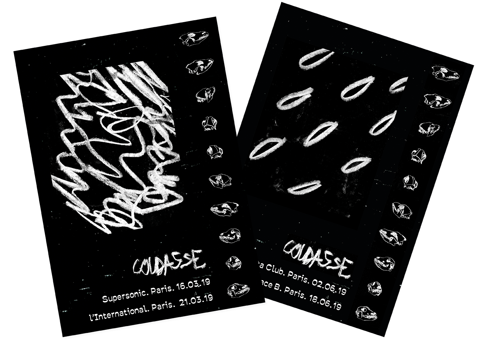
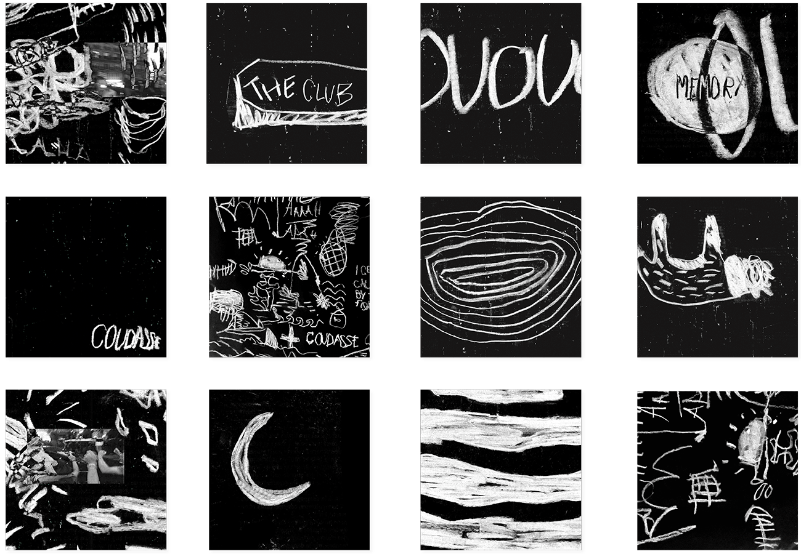
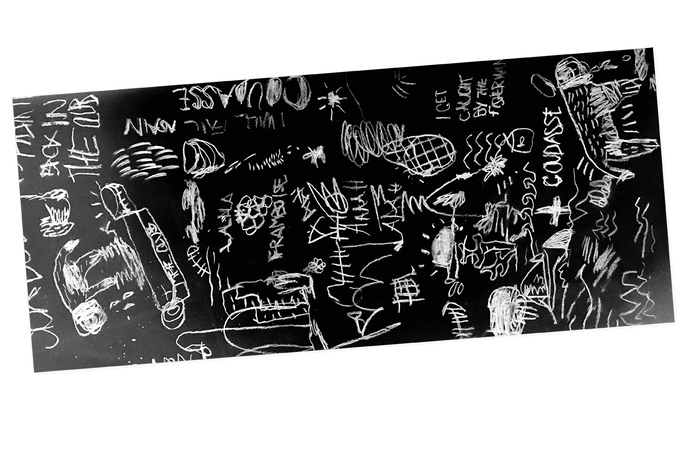
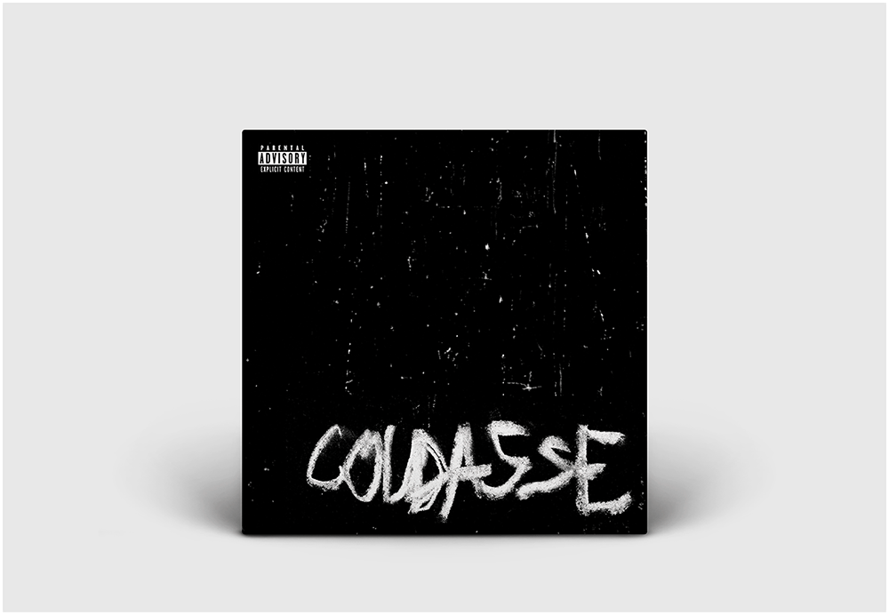
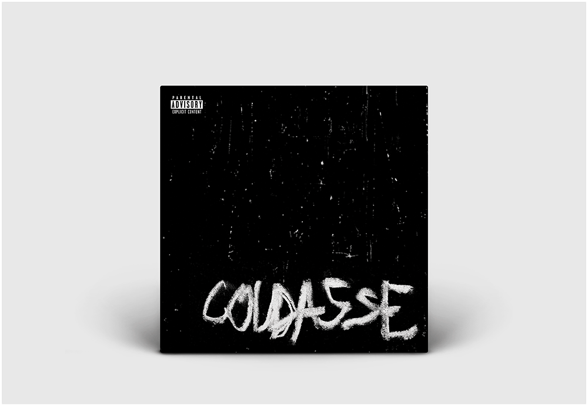
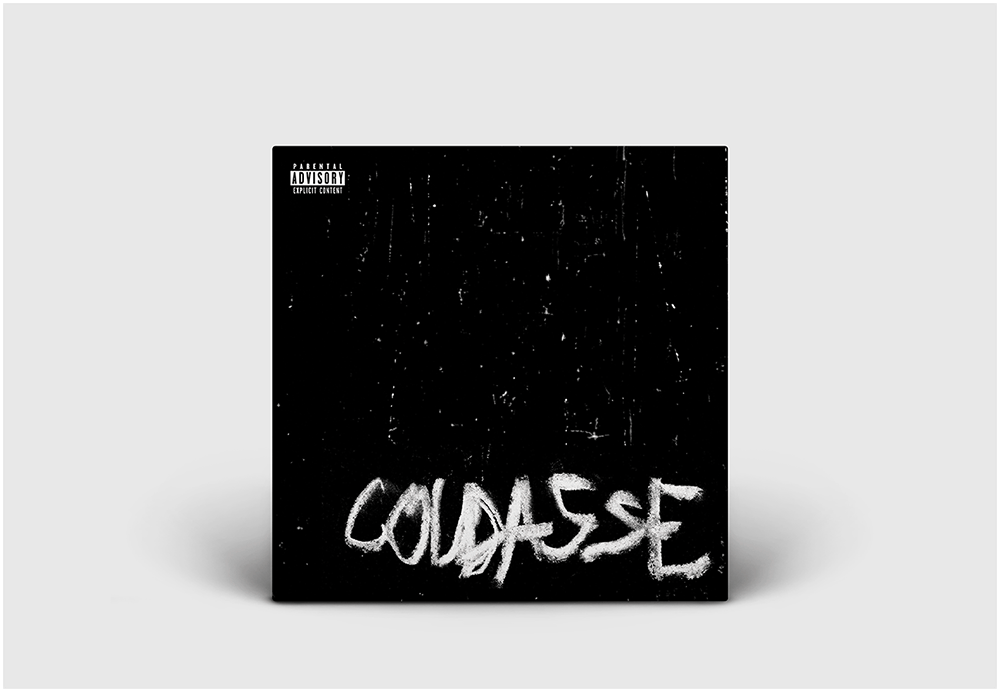

Coudasse
Conception de l'identité graphique du groupe de post-punk Coudasse et réalisation de leur clip vidéo pour le single Sick Dog.
Direction artistique, affiches, pochette de l'EP, clip vidéo et supports de communication numériques réalisés en août 2018.



 

